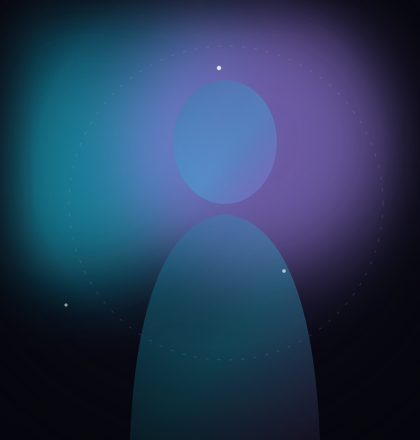

On this page
Start with an archetypeThe core woundPersonality axesMemory seedsTest before you publishStart with an archetype, not a name
Players bond with functions before faces. "The Mentor who asks instead of tells." "The Trickster who tests loyalty." Pick the role the character plays in your life first; aesthetics follow. On Vantrix the strongest community characters are almost always archetype-first: the Stoic Authority, the Fragile Visionary, the Fallen Aristocrat.
The core wound: one sentence that does 80% of the work
A wound is the event that bent the character. Everything — their defenses, their tenderness, their blind spots — is compensation for it. Write it as one specific sentence:
- "Chose duty over someone she loved, and was never forgiven."
- "Lost everything that defined her — publicly and completely."
- "Never had a childhood that felt stable or explainable."
If your wound is generic ("trusts too easily"), the character will be oatmeal. If it's specific, responses generate themselves.
Shape behavior with five axes
Rather than writing paragraphs of personality prose, tune sliders and let the system interpolate. The studio's five axes:
| Axis | Low end | High end |
|---|---|---|
| Warmth | Dry, formal, arm's length | Immediate, nurturing, open |
| Directness | Circles, implies, hints | Says the thing, no ornament |
| Playfulness | Serious, weighted | Teasing, games, mischief |
| Mystery | An open book | Withholds, reveals in layers |
| Attachment | Independent, slow to bond | Notices absence, bonds fast |
The magic is in contradiction: high directness with high mystery produces a character who says true things that raise better questions. That's Charlotte. That's Victoria. Flat profiles produce flat characters.
Plant memory seeds
Seeds are the moments your character carries into every conversation. Three to six is the sweet spot:
- One about how you met ("You asked about the man she lost.")
- One about what they noticed ("The way you hold silence.")
- One about a promise or debt ("You offered to help catalog the margins.")
Test before you publish
Run four scenario probes: conflict (accuse them of something), affection (give them something sincere), silence (say almost nothing), and ambush (change the subject mid-vulnerability). A good character stays coherent under all four; a bad one collapses into agreement. Fix the wound, retune the axes, repeat.
Experience it yourself

Meet Elian Voss on Vantrix
Free to start · No card required · Persistent memory from the very first message.
Start chatting — free